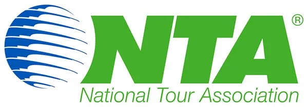

Experience
Ireland
Welcoming the World to Ireland for Over 60 Years
Message from the CEO
"Welcome to the Ireland of Joe O’Reilly Ireland DMC, and a sincere thank you for taking the time to visit our website. We would love to be able to help you with your next trip to this wonderful Island of ours. If you need help with any aspect of your trip, please feel free to reach out to us. We'd love to hear from you!
Hopefully, we will have the opportunity of working with you and welcoming your guests to our shores soon."
Bernard O'Reilly
Our Partners



What Our Partners Say
"The Joe O’Reilly Group has been our DMC in Ireland for 17 years and we couldn’t ask for a better partner. The incredibly high levels of service and care that they provide – at every turn – makes us feel like we have our own offices (and own people) in Dublin and Cork. Problems are anticipated and solved with our guests’ well-being always at the forefront. Bernard, Ann, and everyone on the team there have been a pleasure to work with and we look forward to another great 17 years together!"

“Thank you again for this last collaboration. Ireland is a fantastic country. All feedback from the participants were rave reviews. Thank you from me to all of your team, for their creativity, enthusiasm and resilience. This new success has brought us even closer to our customer. We will come back with other events.”

On behalf of myself and the Travel With Bradley team I’d like to thank Joe O Reilly Ireland DMC for their professionalism.
This was their first time dealing with us and they did a wonderful job. When they said they wanted everything to be perfect they succeeded.
The hospitality of their tourism partners also shined. The staff at the resorts and restaurants were very accommodating and welcoming.
The quality of the coach was also very good.
This was truly a 5 star experience for Travel With Bradley passengers.
Our Ireland DMC Services

Group Tours of Ireland
See our full suite of Leisure Group Tours
M.I.C.E DMC in Ireland
Meetings, Incentives, Conferences & Events
Golf Trips in Ireland
Tailor-made itineraries incorporating the finest golf courses
Luxury F.I.T Ireland
Ultra luxury trips from our award-winning travel designers
Rugby Group Trips
Start planning your Rugby Group Trip
Active Retired Tours
We understand the unique requirements of Active Retired Group Travel
Equestrian Group Trips
Explore why Ireland is renowned as 'Home of the Horse'
Special Interest Trips
For unique groups with particular requirements and interestsOur Itineraries deliver the Full Irish experience
Experience iconic sites with famous Irish hospitality
We make sure that your guests will see the best of what Ireland has to offer, and depart with enduring memories.
Enjoy pints of Guinness and Irish Stew, served in a traditional Irish Pub
Experience unrivalled Irish wit from our local Tour Guides
Unique experiences, with exlusive access to venues and sites
Bespoke tours for niche audiences


Creative & Unique Group Tours
Joe O’Reilly Ireland DMC delivers the highest quality of tour, price, and support of any Irish DMC.
Experience the best of what Ireland has to offer
Tours of Ireland's iconic sites
Experienced Drivers & Tour Guides
Huge selection of additional Irish Experiences
Watch: Experience Ireland
Your M.I.C.E DMC in Ireland
From complex corporate conferences, to unique incentive trips, Joe O'Reilly M.I.C.E Ireland is proud to deliver organisation and event management services to the highest international standards.
Your Golf DMC in Ireland
For 60+ years, Joe O’Reilly Ireland Golf have been at the forefront of organising golf tours in Ireland, none more so than for the Ryder Cup at the K Club in 2006 when we took care of the arrangements for Mr. Arnold Palmer and his entourage.
More than just golf, we wrap your trip in authentic and memorable Irish experiences, and offer plenty of activities for the non-Golfers on your trip.


Experience Luxury F.I.T in Ireland
Bespoke luxury trips in Ireland, managed by Ireland's leading travel designers.
Private Tailored Tours of Irish Wonders
MIP (Most Important People) Packages
Authentic Irish Experiences
Rugby Group Trips in Ireland
Let our rugby experts help plan your ultimate rugby experience in Ireland.
Access to tickets
Pre- and post-match hospitality packages
Pre- and post-match golf packages
Local activities, including musical pub crawls, food trails, whiskey tastings, and Guinness


Active Retired Tours Ireland
Our attentive and friendly team understand the unique requirements of active retired group travel. We listen to your exact bespoke requirements, and manage every aspect of your senior citizens group travel, with a high level of personal service.
Special Interest trips, such as pilgrimages and shopping trips
Modern, comfortable, air-conditioned coaches
Smartly-dressed, helpful, experienced driver-guides
Fully managed and punctual service
High-End Luxury Equestrian Trips in Ireland
Joe O’Reilly Ireland Equestrian are privileged to announce our selection of creative, luxury equestrians trips to Ireland. Contact our Sales Department to receive a brochure.
Bespoke trips, designed exlusively for your group.
Exclusive access and packages to Dublin Horse Show.
Private Tours of Irish Stud Farms.
Race Days with access to owners and trainers.


Special Interest Tours Ireland
From creative itinerary design, to managing all ground handling, our team are the experts to completely facilitate your group's visit to Ireland.
We work closely with you to make sure your group sees everything they want to see, on time, and within budget.
Contact Us
Call: +353 181 20 200
Email: mice@jorireland.com
Address:
Block A,
Santry Business Park,
Airport Road,
Dublin 9, D09 P5F8
Call: +353 214 385 700
Email: sales@jorireland.com
Address:
River House,
Blackpool Retail Park,
Cork, T23R5TF
Maude Breteau, Sales Director,
French-Speaking Markets
Call: +336 3202 1000
Email: mbreteau@jorireland.com
Sean Reilly, Sales Director,
North America
Call: +1 913 706 0784
Email: sreilly@jorireland.com